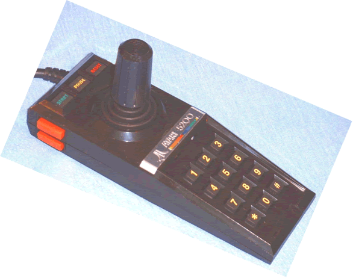
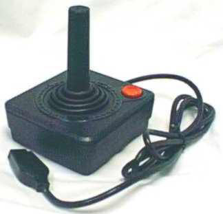

As of July 10, 2018 Best Electronics is now shipping 4th Generation / Rev. 4 of the Best exclusive Atari CX40 Joystick Lifetime Gold PCB boards. For over 13+ years now, they have become a World Wide Upgrade board that turns the always failing (because of the stock CX40 boards) Atari CX40 Joystick into lifetime Gold CX40 Joystick (assuming the inner CX40 white handle is good). Read the upgrade stats / information on the Best CX40 Gold PCB's and the 110% positive feed comments from World Wide Atari / Commodore CX40 Joystick users that have installed the Best CX40 Gold Upgrade boards They are even purchased direct from Best Electronics and resold on E-Bay!
Be advised of the Atari 7800 clone power supplies ($22.61 to $40.97) and the very over priced ($49.95 to $89.95) stock New Atari made OEM 7800 Power supplies listed on E-bay, all suffer from the same known 7800 Power supply design problems that cause them to go bad early for the last 25+ years and is one of the many reasons why Atari 7800 users are always looking for a New / Replacement 7800 Power Supply. After 11 months of work, Best has cured these known 7800 Power supply problems with its New Upgraded / Improved / Enhanced 2018 Atari 7800 Power supply which costs less than any of the ones listed on E-Bay and has a better / longer Atari Warranty. Read the Best Article on the making of the New 2018 Best 7800 Upgraded / Improved / Enhanced Power Supply
Best Electronics is releasing its 1st upgraded Atari product for 2018. Read about the 10 month story behind the making of the Best Atari 600XL / 800XL Enhanced / Upgraded replacement Keyboard Mylar
After 12+ months work, Best Electronics is releasing another upgraded Atari product for 2017. The Best 2nd Generation Enhanced / Upgraded Custom made Atari Composite Video Cable for Atari 8 bit Computers
After 10+ months work, Best is releasing its latest Atari Upgrade part for the 35+ year Atari designed CX40 Joystick. See why Best went back to a 1982 Atari Engineering designed CX40 part to inspire its latest Upgraded / Improved CX40 Lifetime replacement part.
Where the average Atari company would of given up over a year and 7 months ago, looking for a replacement / upgraded Atari CX30 Paddle Pot. Best would like to thank the hundreds and hundreds of patient world wide Atari CX30 Paddle users who have waited and inquired over and over for the last 19+ months about the status of Bests Super Pot search. Read what Best Electronics went thru searching the world for a new 2nd Generation CX30 Pot vendor. What sounds like a very easy Atari part to find, ended up being a very very long extended search (the 2nd longest in the 34 year company history) for Best Electronics.
After over 8+ months work, Best is releasing its latest exclusive Atari upgrade. It is a 2016 Upgraded / Improved / Licensed version of a bench mark / proven Atari 800XL 256K Ram Upgrade, 1st released in 1990.
After over 6 months work, Bests New and Latest Gold controller Upgrade for a troubled Atari 7800 Joystick (like the Atari CX40 and CX52 Joystick problems which Best has fixed) with a shaky past. If you liked Bests CX40 Joystick lifetime Gold PCB boards, Upgraded Gold Lifetime Atari CX40 Joysticks and Lifetime Atari 5200 CX52 Gold Joysticks you will love this latest Atari 7800 Lifetime controller upgrade.
After 8 months work, Best's latest 2016 Atari 1200XL Keyboard Upgraded internal replacement Mylar for an Atari keyboard with almost a 100% Failure rate!
The World Leader in Atari Parts and Atari Supplies. On February 1, 2018
Best Electronics started its 34th year in the Atari business!
As of 02-07-18
the Best Web site has had over 1 Million+ views from World Wide Atari users!
Love
what you see at the Best All
Atari Web site? Click
on the Favorites button below to add
Best Electronics to your
Internet Explorer
Favorites folder.
The Perfect Holiday / Birthday Gift for that Atari Person.
Best Atari Customer feed back:
All comments are spontaneous unsolicited Best customer feed back comments and are posted here with the permission of each Best customer.
Kyle D. of IL Kyle contacted Best because he was having problems with an Atari 2600 console he just picked up. Best give him some Atari 2600 trouble shooting tips. 4 to 5 E-Mails back and forth, it looked like his 2600 console had a bad chip set. So Kyle ordered a 2600 replacement 3 chip set from Best. Kyle installed the Best 2600 chip set. It cured the original 2600 problem and the 2600 worked fine. But a new 2600 problem showed up. Kyle's 2600 had a very good display with good sound, but when the 2600 console was turned off and on again a new video problem appeared. We asked Kyle to do a new channel scan on his flat panel TV with the 2600 running a game. "Scanning after changing to the new chips picked up Channel 2, and it runs beautifully on it! Even got full audio! All problems solved!! Thank you so incredibly much for the hugely substantial amount of assistance and components!!"
Paul J. of Canada Paul contacted Best via E-Mail. Several E-Mails back and forth, Atari questions asked and answered. Paul placed his very 1st Atari order with Best. "Thanks - We received the shipment yesterday! The new drive belt is installed and my 1050 drive works like it was 1985 again. I am sure it will run for another 35 years! The new 130xe main board also works perfect. I can honestly say Best rescued both items from the landfill. Thanks for helping persevere a little bit of Atari computing history in our home! I can say with 100% assurance that we will be back for additional purchases. Best is the best! Thanks Again!"
Mark H of DE. Mark just ordered one of Best's 7800 CX24 Reconditioned / Upgraded with Best's new CX24 Gold Lifetime internal board set, to replace a stock always going bad Atari CX24 Joystick. In 2016 Mark ordered one of Best Reconditioned / Upgraded Gold Lifetime CX52 5200 Joysticks. "Best Electronics does it again! I received my CX-24 controller today and I have to confess I never liked playing my 7800 because the controllers I had were so bad. (I never knew any better) Today I found out how good it should be, this controller is amazing. Can not say enough positive things about Best products and service. My 5200 Best controller still rocks having had it since 3/16."
Colton M. of Canada Colton contacted Best looking for a pair of Atari CX30 Paddles. We told Colton we had Atari CX30 Paddles upgraded with Bests New 2nd Generation (five lifetimes worth of normal use) S-5 Atari Paddle Super Pots. "I have now received the order, and I must say I am very impressed. The paddles are of a ridiculously high quality - it has been a real pain for me to find decently reliable paddles lately, and now I think my search is over! Keep up the good work, if any of my buddies are looking to get into the retro-gaming scene, I know where to send them! Thanks again!"
Paul T. of Australia Paul contacted Best looking for some new replacement parts for an Atari 2600 he was rebuilding. He ordered 4 new Atari 2600 slide switches, a 2600 R/A Power jack and 2600 7805 voltage regulator. "You are a legend. I got the parts this afternoon, couldn’t be happier. Beautifully packed to boot. I’ll have to scour markets for more busted 2600s !!!"
John N. of NY John contacted Best and said "hello, just came across your website and it's fantastic. I need full button and gold circuit for the Atari 5200 controller. How much for the new circuit board, fire buttons, keypad and start/pause/etc button setup? Can't wait to get this controller back up and running!" John ordered one complete set of Best CX52 Gold lifetime parts for his 30+ year old Atari CX52 Joystick. "Got the items and fixed my controller!! Works like a charm!!! Thank you so much."
Follow up Comment: "It was fantastic to be able to use this system, especially since I never had it as a kid!"
Andrew M. of IL Andrew placed his very 1st Atari order with Best. He ordered a new in box Atari XC12 Program recorder (the very last new Atari 8 bit Cassette drives made) A few XL and 800 replacement Key caps to replace some missing old Atari keyboard key cap locations and the Best made exclusive upgraded 1200XL Keyboard internal replacement Mylar. "Lovely stuff. Mylar for the 1200XL is perfect. Atari XC12 looks perfect. That was the last piece of equipment I needed to recall some good childhood memories"
347+ Additional Best Customer Atari Feedback Comments from all over the World
Best Electronics has been Sold Out of the very popular Wizztronics Atari 8 bit Midimax MIDI interfaces for close to 6 – 7+ years now. Not to use the over used “
RARE” word on E-Bay Atari listings, the MIDIMAX product is one step more. In the last 10+ year of watching for Atari items on E-bay every single day, I think in total, we have only seen one used Wizztronics MIDIMAX listed and sold on E-Bay. Think of it, have you ever seen a Wizztronics Atari MIDIMAX ever listed on E-bay at all? World wide Atari 8 Bit Computer (400 (48K), 800 (48K), 1200XL, 800XL, 65XE / 130XE and XE Game owners simply will not part with their highly prized Atari MIDIMAX interface. With an inexpensive MIDI Keyboard you can now learn how to use MIDI Synthesizers, Drum machines, Write/Save, Play and Modify Music without the normal High cost of a normal MIDI system and Atari ST, PC or Mac Computer. With the MIDIMAX MIDI interface, standard MIDI Keyboard, 2 MIDI cables and an Atari 8 bit computer with disk drive, you have a Brand New application for your Classic Atari 8 bit Computer!!We have some interesting News on the Atari MIDIMAX product
The Best Electronics State of the Art internal Upgrade for the Classic Atari CX40 Joystick!
Also See Atari CX40 Joysticks upgraded with the New Best CX40 Internal Upgrade!
Atari Flashback2 New Owners. Did you know that there is an Internal Hack / User installed upgrade that will allow the New Fixed 40 internal game Flashback2 Atari consoles to use the over 400 to 600+ Atari 2600 Game cartridges? It does require you open up (Break the Warranty seal) your Flashback2 Console and solder wires to the Flashback2 motherboard. Best Electronics is listed in this article and the only one in the world to have the New Atari 2600A Cartridge Guide assemblies ($10, Limit one) in stock for this Flashback2 upgrade.
I
over paid for an
 Atari
item!
E-Bay is a great place for Atari Bargains, but over the
last 14 to 15+ years we have seen Atari E-bay bidders
over pay for thousands of New and
Used Atari items that have No
Warranty at all, when Best Electronics has the exact same
New Atari item in stock for less money
with the normal Atari 90 Day
Warranty
(same Atari
Warranty for the last 33+ years) and in most cases with cheaper shipping
charges.
So when you find an Atari item on E-Bay you are thinking about bidding on,
suggest you come to the Best Atari Web site to find if Best Electronics has the
same New Atari item in stock. Remember that not all of the over 5,000+
Atari items we have in stock are listed at this Atari web site, only the more
popular ones we get requests for. If you can not find it on this all Atari
web site, send us an
E-Mail:
Atari
item!
E-Bay is a great place for Atari Bargains, but over the
last 14 to 15+ years we have seen Atari E-bay bidders
over pay for thousands of New and
Used Atari items that have No
Warranty at all, when Best Electronics has the exact same
New Atari item in stock for less money
with the normal Atari 90 Day
Warranty
(same Atari
Warranty for the last 33+ years) and in most cases with cheaper shipping
charges.
So when you find an Atari item on E-Bay you are thinking about bidding on,
suggest you come to the Best Atari Web site to find if Best Electronics has the
same New Atari item in stock. Remember that not all of the over 5,000+
Atari items we have in stock are listed at this Atari web site, only the more
popular ones we get requests for. If you can not find it on this all Atari
web site, send us an
E-Mail:
Here are some recent samples of over paid or over priced Atari items we seen on E-Bay
Used SLIME (Atari 400/800, 1982) By Synapse (Cartridge only) NTSC. Free 30 day returns. Current 28 day E-Bay auction as of 01-07-18. Buy it now for $15 with free shipping
Bests New in the Shrunk Wrapped box Synapse Slime Game for the Atari 400 / 800 Computers only with normal 90 day Atari Warranty. $9.95 plus shipping
Used Atari Computer 400 800 XL XE BASIC CXL4002 Video Game System. 30 day money back, buyer pays return shipping Current 27 day E-Bay auction as of 01-07-19. Buy it now for $34.95 plus $3.95 shipping
Bests New in the Shrunk Wrapped box, Atari Basic Cartridge for for the Atari 400 / 800 / XL / XE Computers with normal 90 day Atari Warranty. $12.00 plus Max. US shipping $7.20
Used 1 x Atari POKEY Chip (C012294) TESTED and WORKING! 2 sold 30 day money back, buyer pays return shipping Sold on 01-06-19 for $31.99 plus $2.66 shipping
Bests New Atari Custom made CO12294 Pokey Chip with normal 90 day Atari Warranty. $20.00 plus Max. US shipping $7.20
Rampage Atari Lynx 4 Players With Larry the Rat! New Sealed In Box Free Shipping. 3 available / 11 sold. Seller does not offer returns Current 27 day E-Bay auction as of 12-27-18. Buy it now for $99.95 with free shipping
Bests New in the Shrunk Wrapped box Atari Lynx Rampage with normal 90 day Atari Warranty. $28.50 plus max. US shipping $7.20
DINOLYMPICS Atari LYNX New Sealed Complete. 5 available 4 sold Seller does not offer returns Current 28 day E-bay auction as of 12-27-18. Buy it now for $48.50 plus $4.00 shipping
Bests New in the Shrunk Wrapped box Atari Lynx Dinolympics with normal 90 day Atari Warranty. $19.95 plus max. US shipping $7.20
Used Official OEM Atari Jaguar Controller. Free 60 day returns Current 28 day E-Bay auction as of 12-27-18. Buy it now for $29.99 with free shipping
Bests New Atari Jaguar Power Pad Controller (no box) with normal 90 day Atari Warranty $16.95 plus shipping Best has both New versions made of the Atari Jaguar Power pads in stock. The standard version (above) the better version with tactical feed back silicon pads
Used Atari Computer 400 800 XL XE Game Gorf cartridge only Video Game System. 30 day money back, buyer pays return shipping Current 4 day E-bay auction as of 12-27-10 Buy it now for $39.95 plus $3.95 shipping
Bests New in the Shrunk Wrapped box Roklans Gorf game for only 400 / 800 Atari computers with normal 90 day Atari Warranty $29.95 plus max. US shipping $7.15
Like New / Used Grey Gray Box Brain Games ATARI 2600 Video Game System. 30 day returns. Buyer pays for return shipping Current 24 day E-Bay auction as of 12-27-18. Buy it now for $79.95 plus $3.95 shipping
Bests New in the Shrunk Wrapped box Atari 2600 Brain Games game with normal 90 day Atari Warranty. $12.00 plus max. US shipping $7.20
Used ATARI 800 Home Computer System CX85 NUMERICAL KEYPAD Bookkeeper Kit W/ Original. Seller does not offer returns Sold on 12-23-18 for $75.00 with free shipping
Best New in the Shrunk Wrapped box CLX419 Atari Bookkeeper Accounting program / complete package for the Atari 800, XL, XE and XE Game computers with normal Atari 90 day Warranty $20.00 (same price for the last 25+ years) plus shipping
Used Atari 2600 Game Froggo Karate Complete ATARI 2600 Video Game System. #WO7 30 day money back or item exchange, buyer pays return shipping Sold on 12-19-18 for $59.95 plus $3.95 shipping
Bests New in the Shrunk Wrapped box Froggo Games 2600 Karate with normal 90 day Atari Warranty. $15.00 plus Max. US shipping $7.20
Frogger atari 2600, New/sealed. Seller does not offer returns Current 23 day E-Bay auction as of 12-22-18. Buy it now for $60.00 plus $7.75 shipping
Bests New in the Shrunk Wrapped box Parker Bros 2600 Frogger with normal 90 day Atari Warranty. $29.95 plus shipping
Used Atari Computer 400 800 XL XE Game Gorf cartridge only Video Game System. 30 day money back, buyer pays return shipping Current 11 day E-bay auction as of 12-22-10 Buy it now for $39.95 plus $3.95 shipping
Bests New in the Shrunk Wrapped box Roklans Gorf game with normal 90 day Atari Warranty $29.95 plus max. US shipping $7.15
2,522+ examples of over paid or over priced E-Bay Atari items
Best Electronics Quick Reference Guide for Atari Replacement OEM Power Supplies, Cables and Connections to TV's and Monitors
Best Atari Information tip: Atari Power Supplies or what you should know before you buy a used E-Bay Atari Power supply or E-Bay Atari product with an used internal Atari Power Supply.
Best Atari XL / XE Power Supply information tip. Are all Atari XL / XE replacement power supplies the same?
Best Electronics Final Answer to the Atari 5200 Joystick 25+ year Problems, What Every Atari 5200 Owner Should Know!
New Best exclusive 2nd generation Atari CX52 Joystick Upgrade
After close to 28+ years of selling Reconditioned Atari Carbon dot and Gold CX52 Joysticks, we have finally run out of the Atari CX52 Joystick cores to rebuild, we got out of the local Sunnyvale Atari warehouses years ago. Any Atari 5200 owner who purchased our Best CX52 Gold Joysticks, 1 to 11+ years ago from us, knows that they are now lifetime upgraded CX52 Joysticks and you do not need any spare old / used CX52 Joysticks to keep as possible back up controllers. We are asking you to send us any old / used Atari CX52 Joysticks you have. Keep them from going into a land fill and recycle them so another deserving Atari 5200 owner like yourself will have the same fun / lifetime use of a Best CX52 Gold upgraded Joystick that you have. If you like Best will credit you Best customer account a $6 credit per sent in CX52 complete controller for a current or future Atari Purchase / order from Best Electronics.
Best Electronics
Exclusive and Very Comprehensive article on the proper rebuilding Atari CX52 5200 Joysticks Includes a short list of the more popular Atari CX52 Joystick and Atari 5200 OEM replacement parts we carry (end of Article).Brand New Custom made Atari Dust Cover for the Atari 5200 Consoles. Back in stock after being out of stock for 12+ years

Do you have one of the Classic Atari CX40 Joysticks that is not working well? We have the perfect Solution for you. Includes a short list of Atari CX40 OEM replacement parts and New Best 4th generation Gold CX40 PCB boards
Good News! CX40 stock Joystick Rubber boots back in stock, no limits for now.
The New 2016 Best CX40 Silicon Lifetime Joystick boot
Do you have an old pair of Atari CX30 Paddles that have Shaking / Jittery cursors when you use them? Read how simple it is to cure this problem. Includes a short list of Atari CX30 Paddle OEM replacement parts. One of the critical Atari OEM parts we got out of the local Atari Parts warehouse, required for this Atari CX30 Paddle rebuild finally Sold Out, but after a 6 to 7 year search the critical CX30 Paddle part just got upgraded to a 3X better version (Sold Out), now shipping a 5X 2nd Gen. Paddle Pot. See information below.
Another Best Electronics Exclusive Atari Upgrade item! Read about Best Electronics 6 to 7 year search for a replacement Atari CX30 Paddle Potentiometer. New Extended life Atari CX30 Paddle, Gemini (non Atari Clone paddles) with the half shaft paddle knobs (not for the Gemini paddles with the splined paddle knob/pot shaft) and Ultra Pong, Super Pong, Super Pong Pro Am hand held Pong Paddle controllers replacement 1st Generation Super Potentiometers!!!


1st Generation CX30 Paddles Super Pots have finally Sold Out
Read about Bests 19+ month search for a 2nd Generation Upgraded / Enhanced S5 Atari CX30 Paddle and Atari / Sears Pong Paddle Super Pots!
Can the Best S5 Lifetime CX30 Paddle pots be used / installed on Non Atari made Paddles?
1st Generation Super Pots
2nd Generation S5 Super Pots
Back in Stock after a long absence, the Atari CX24 Joystick / Atari CX22 Stock Trackball Fire button replacement PCB's.
T
he New Best CX24 Joystick Upgrade matched set of 3 Gold Lifetime PCBs.

State of the Art, Atari Joystick for the Older Atari Systems!
Click on image for more info.
Ever hear an old Atari person talking about an
Atari BBS or Sysops and wonder what they were talking about? Find out what Atari Computer users did 15 to 18+ years ago, before the Internet as we know it! See a Demo of an Atari BBS or with a little effort, you can once again connect up to a live Atari BBS!Read about a recent visit we had to Best Electronics from one of the premier Atari / Activision programmers of her time,
Carol Shaw!Best Atari Information Tip: What you need to know before you buy an
Atari Light Gun for your Atari 8 bit computer or Atari 2600 / 7800 game systemHaving trouble connecting up the your old Atari to your Cable Ready TV and think your
Atari is Bad? or What you should know before you connect up your Old Atari Product to your Cable Ready TV. Check out our Best Electronics Money Saving Atari Information tips (and other common problems) before you doing anything else with your Atari 2600, 5200, 7800, Atari 8 bit Computers or ST Computer system! These Best Tech Tips also apply to Most Atari products made, that connect up to a TV.Best Atari 2600 Tech Tip! What to look for when Buying/Bidding on a Used or third party Reconditioned Atari 2600 / 2600A / 2600Jr console. Includes a list of Atari OEM 2600 replacement parts.
New Atari Dust Covers for the Atari 2600/2600A Consoles and for the first time in 22+ years, Brand New Custom made Cover for the Atari 7800 Consoles
New Atari Engineering 2600 Heavy and Light 6 switch console Composite Video Kit Rev. 2
Best Atari Tech Tip: Faulty Game Cartridges?
How you can salvage questionable Atari Game Cartridges.
Latest Free Atari Tech Tip on getting Composite Video out of your Atari 2600, 5200 or 7800 without any internal Mods.
Atari 2600 Cartridge Collectors! Do you have an Atari 32 in 1 Game Cartridge in your Collection?
 New
Atari Prototype / Unreleased in the US, 7800 Light Gun Game! Atari US /
NTSC version Sentinel.
New
Atari Prototype / Unreleased in the US, 7800 Light Gun Game! Atari US /
NTSC version Sentinel.
Have you seen those E-Bay Auctions for 7800 Composite Video modifications? You pay from $35 to $50+ and send (you pay for the shipping) in your 7800 console to be modified. Best Electronics has a new Atari Engineering designed 7800 Composite Video mod for US 7800 Consoles you can do yourself for far less money!
New or First Time US  Atari
bidders, Read our
informative Best Atari Information Tip,
That will save you some Grief, Hassles and Money!!
Atari
bidders, Read our
informative Best Atari Information Tip,
That will save you some Grief, Hassles and Money!!
Thought to have passed into Atari History (lost for over 10+ years in our Atari Warehouses, we recently found a box of upgrade instructions on an Atari Pallet we were breaking down), Atari User written 8 bit Atari Computer Upgrades / Atari Hacks. The Atari 65XE to 320K / 130XE Ram upgrade, 256K 600XL , Atari 1200XL Operating System back to the more popular 400 / 800 OS standard and Indus 8 bit GT Disk Drive Upgrade ROM.